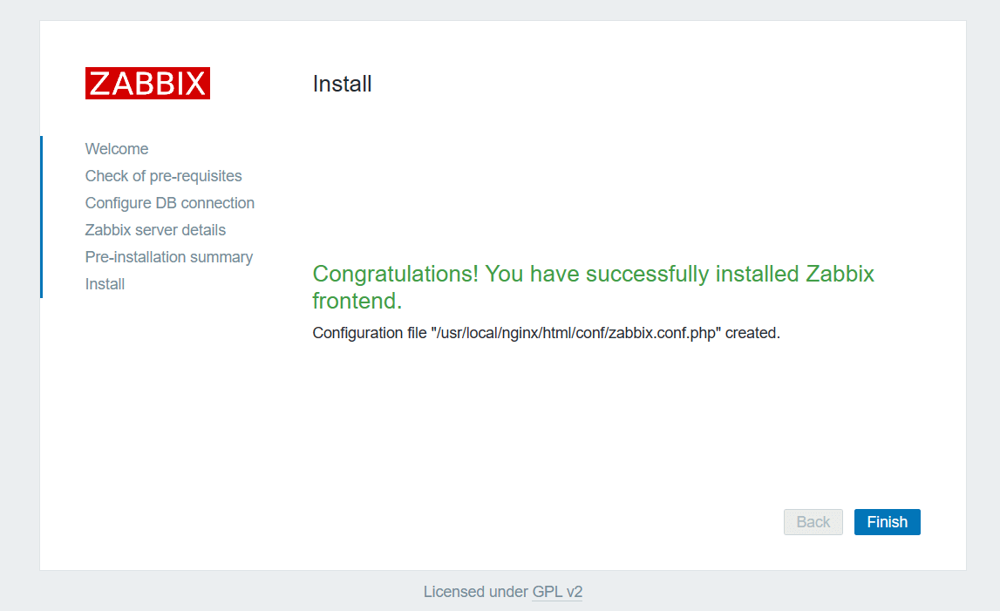
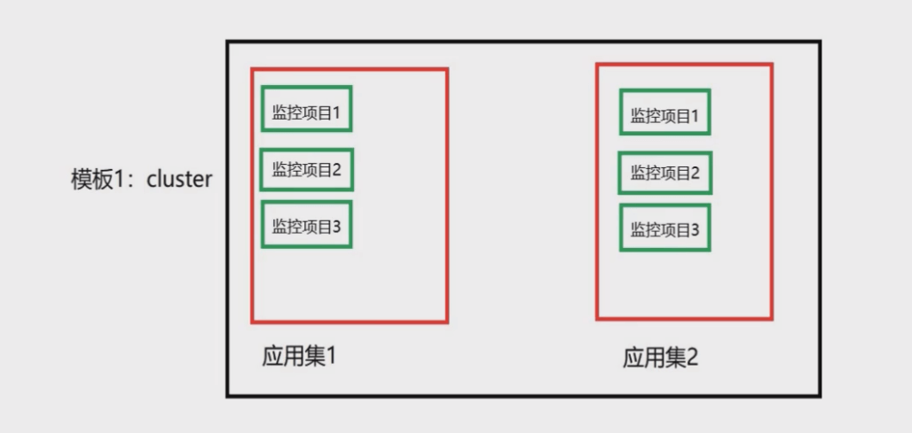
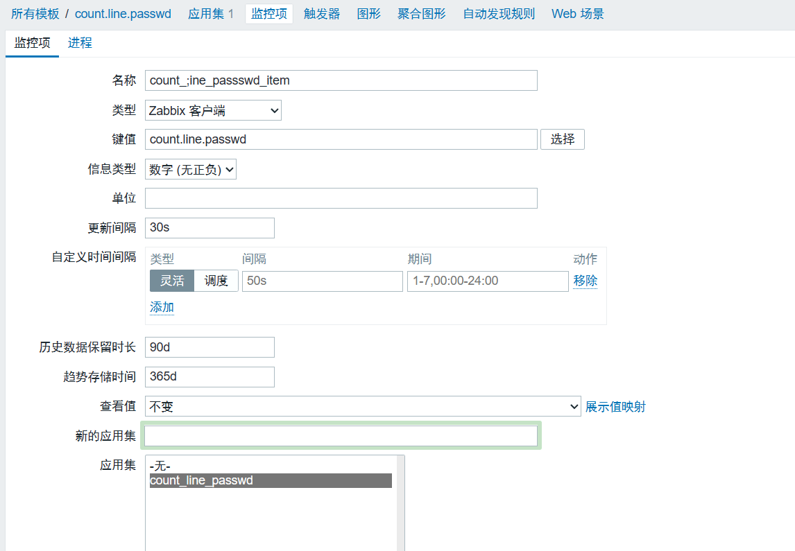
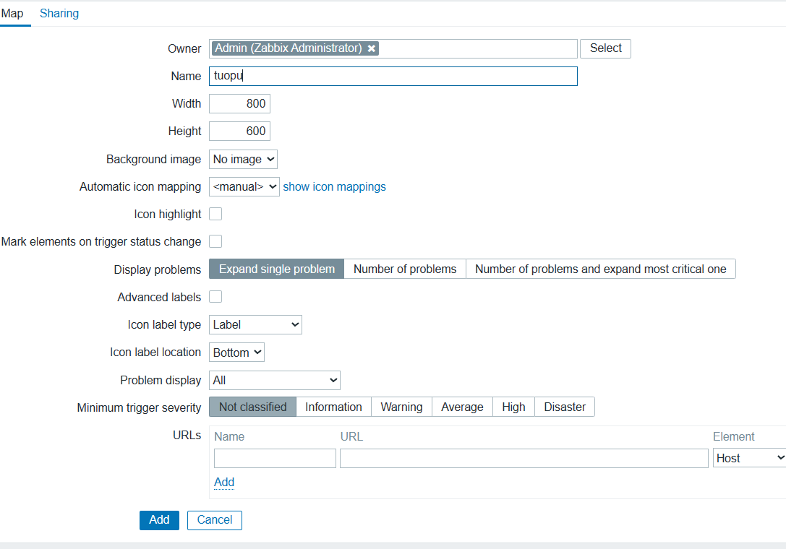
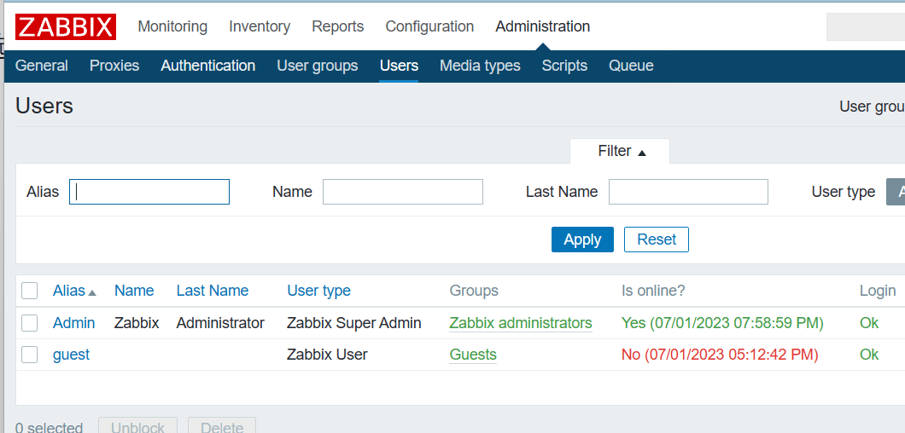
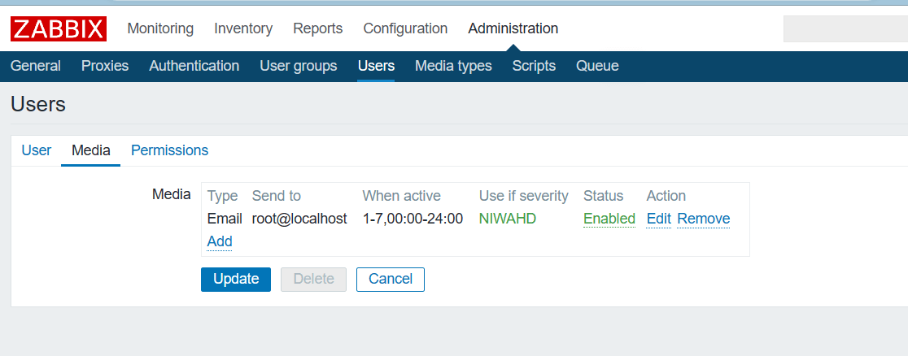
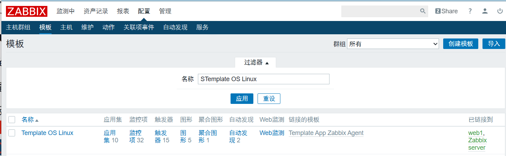
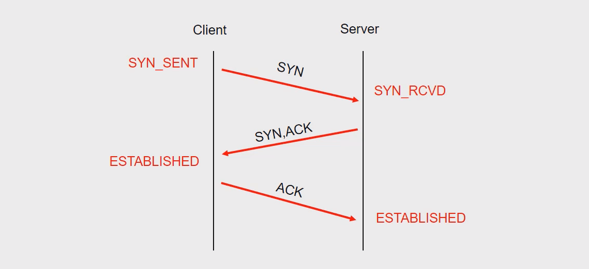

Zabbix
监控概述
监控的目的
报告系统运行状况
每一部分必须同时监控
内容包括吞吐量、反应时间、使用率等
提前发现问题
进行服务器性能调整前，知道调整什么
找出系统的瓶颈在什么地方
监控的资源类别
公开数据
Web、FTP、SSH、数据库等应用服务TCP或UDP端口私有数据
CPU、内存、磁盘、网卡流量等使用信息用户、进程等运行信息
监控软件
系统监控命令
ps：查询进程信息uptime：查询运行时间和cpu负载信息free：查询内存信息swapon -s：查看交换分区的信息df -h：查询硬盘和挂载的信息ifconfig：查询网络信息[net-tools]netstat或ss：查询网络连接状态和端口的信息ping：测试网络延迟traceroute：跟踪路由iostat：查询磁盘io的性能（读写）[sysstat]sar：综合命令，可以查询cpu、磁盘、网络历史数据和实时数据
自动化监控系统
Cacti
基于
SNMP协议的监控软件，强大的绘图能力Nagios
基于
Agent监控，强大的状态检查与报警机制插件极多，自己写监控脚本嵌入到
Nagios非常方便Zabbix
基于多种监控机制，支持分布式监控
Zabbix简介
Zabbix是一个高度集成的监控解决方案- 可以实现企业级的开源分布式监控
Zabbix通过C/S(client/server:客户端/服务器)模式采集监控数据Zabbix通过B/S(browser/server:浏览器/服务器)模式实现Web管理
Zabbix监控
监控服务器
监控服务器可以通过
SNMP或Agent采集数据数据可以写入
MySQL、Oracle等数据库中服务器使用
LNMP实现web前端管理被监控主机
被监控主机需要安装
Agent常见的网络设备一般支持
SNMP
LNMP环境准备
安装前准备
监控服务器（需要使用Web页面操作，因此需要先部署LNMP）
设置主机名（zabbixserver）
关闭防火墙、selinux
设置IP（1.5）
监控客户端（1.100和1.200）
主机web1（1.100）
主机web2（1.200）
关闭防火墙、selinux
部署LNMP
- 安装
nginx及其依赖包
1 | [root@zabbixserver ~]# yum install gcc pcre-devel openssl-devel make -y |
- 修改
nginx配置
1 | [root@zabbixserver ~]# vim /usr/local/nginx/conf/nginx.conf |
设置
nginx开机自启去官网复制修改
https://www.nginx.com/resources/wiki/start/topics/examples/systemd
1 | [root@zabbixserver ~]# vim /usr/lib/systemd/system/nginx.service |
- 启动服务
1 | [root@zabbixserver ~]# systemctl start mariadb |
- 测试页面
1 | [root@zabbixserver ~]# cat /usr/local/nginx/html/test.php |
安装Zabbix
部署zabbix监控端服务器
安装软件
- 安装源码
zabbix
1 | [root@zabbixserver ~]# yum install net-snmp-devel libcurl-devel libevent-devel -y |
初始化准备
- 创建数据库与数据库账户
1 | [root@zabbixserver ~]# mysql |
- 上线
Zabbix页面
1 | [root@zabbixserver ~]# cd zabbix-3.4.4/frontends/php/ |
- 浏览器访问
192.168.1.5/index.php - 点击
Next step
- 安装依赖软件
1 | [root@zabbixserver ~]# yum install php-gd php-xml php-ldap php-bcmath php-mbstring -y |
- 修改
PHP配置文件
1 | [root@zabbixserver ~]# vim /etc/php.ini |
Back之后再次Next step
- 没有报错之后再次点击
Next step - 配置数据库
- 不用添加名字，直接下一步

- 下一步完成安装

- 点击
Finish完成，跳转登录页面 - 默认用户
admin密码zabbix
启动服务
- 修改配置文件
1 | [root@zabbixserver ~]# vim /usr/local/etc/zabbix_server.conf |
- 启动服务
1 | [root@zabbixserver ~]# useradd zabbix # 不创建用户无法启动 |
开机自启
将
zabbix_server设置为开机自启服务/etc/rc.local为开机会执行的脚本文件可以将任意命令写入该脚本文件，开机时就会被执行
该文件默认没有可执行权限
1 | [root@zabbixserver ~]# echo "zabbix_server" >> /etc/rc.local |
部署Zabbix被监控端服务器
配置被监控主机
- 安装软件
1 | [root@web1 ~]# yum install gcc pcre-devel autoconf -y |
- 修改配置文件
1 | [root@web1 ~]# vim /usr/local/etc/zabbix_agentd.conf |
启动服务
1 | [root@web1 ~]# useradd zabbix |
开机自启
1 | [root@web1 ~]# echo zabbix_agentd >> /etc/rc.local |
基础监控
添加监控主机
Host（主机）是监控的基本载体Zabbix所有监控都是基于Host- 通过
Configuration>Hosts>Create Host创建

应用监控模板
为主机添加关联的监控模板
在“
Template”模板选项卡页面中找到
Link new templates，select选择合适的模板添加选择
Template OS Linux模板
查看监控数据
- 可以点击
Monitoring>Latest data - 在过滤器中填写条件，根据群组和主机搜索即可
- 找到需要的数据，点击后面的
Graph - 可查看图形化监控数据
自定义监控
自定义key
- 被监控端修改
Agent配置文件
1 | [root@web1 ~]# vim /usr/local/etc/zabbix_agentd.conf |
- 创建自定义key
1 | [root@web1 ~]# cd /usr/local/etc/zabbix_agentd.conf.d/ |
- 重启
Agentd
1 | yum provides "*killall" # 查询哪个软件包提供killall命令 |
- 测试自定义key是否生效
1 | [root@web1 ~]# zabbix_get -s 127.0.0.1 -k count.line.passwd |
概念
- 要想在
zabbix web页面中可以看见，每隔一段时间就自动获取数据 - 监控模板 > 应用集 > 监控项

创建监控模板
- 登录监控服务器web管理页面
- 选择Configuration > Templates创建模板
- 创建应用集
- 创建监控项

- 创建图形
绑定主机
- 配置 > 主机 > web1
- 在最新数据中查看（web1创建几个用户测试）
拓扑图与聚合图形
拓扑图
- 绘制拓扑图可以快速了解服务器架构
- Monitoring > Maps(拓扑图)
- 选择默认的Local network拓扑图，编辑即可

- 点击tuopu进行编辑
- 添加图标，点击图标
聚合图形
- 在一个页面显示多个数据图表，方便了解多组数据
- Monitoring > Screens(聚合图形) > Create screen
- 点击构造函数
- 自己添加
自动发现
概述
自动发现（Discovery）
当Zabbix需要监控的设备越来越多，手动添加监控设备越来越有挑战
此时，可以考虑使用自动发现功能
自动发现可以实现
发现主机、添加主机、添加主机到组、连接模板等
自动发现流程
创建自动发现规则
创建Action动作（发现主机后执行什么动作）
通过动作，执行添加主机，链接模板到主机等操作
部署被监控端主机web2
1 | [root@web2 ~]# yum install -y gcc pcre-devel |
自动发现规则
创建自动发现规则
Configuration>Discovery>Create discovery rule
- 添加完成，点击操作
- 等待一分钟，查看
监控触发器
概念介绍
- 自定义的监控项默认不会自动报警
- 首页也不会提示错误
- 需要配置触发器与报警动作才可以自动报警
触发器（trigger）
表达式，如内存不足300M，用户超过30个
当触发条件发生后，会导致一个触发事件
触发事件会执行某个动作
动作（action）
触发器的条件被触发后的行为
可以是发送邮件、也可以是重启某个服务等
创建触发器
- 通过Configuration>Templates
- 选择模板点击后面的Triggers>Create trigger
触发器表达式
- Expression表达式：触发异常的条件
1 | {<server>:<key>.<function>(<parameter>)}<operator><constant> |
- Expression表达式案例
1 | # 0为最新数据，如果web1主机最新的CPU平均负载值大于5，则触发器状态Problem |
- 大多数函数使用秒作为参数，使用#代表不同含义
- avg、count、last、min ans max函数支持额外的第二个参数time_shift（时间偏移量）
- 这个参数允许从过去一段时间内引用数据
| 函数内容 | 描述 |
|---|---|
| sum(600) | 600秒内所有值的总和 |
| sum(#5) | 最后5个值的总和 |
| last(20) | 最后20秒的值 |
| last(#5) | 倒数第5个值 |
| avg(1h, 1d) | 一天前的一小时的平均值 |
报警邮件
设置邮件
创建Media
设置邮件服务器
Administration>Media Type>选择Email邮件
设置邮件服务器信息
- 为账户添加Media
- Administration>Users>Admin


创建动作
- Action
- 定义当触发器被触发时，执行什么Action
- 通过Configuration>Actions>Create action创建
测试
- 创建用户使用户数量超过20
1 | [root@web1 ~]# wc -l /etc/passwd |
- 监控主机查看邮件
1 | [root@zabbixserver ~]# yum install -y mailx |
主被动监控
概述
主动和被动都是对被监控端主机而言的
默认zabbix采用的是被动监控
被动监控： Server向Agent发起连接
主动监控： Agent向Server发起连接
区别
Server不用每次需要数据都连接Agent，Agent会自己收集数据并处理数据
Server仅需要保存数据即可
被动监控
- 主动监控
当监控主机达到一定量级后，Zabbix服务器会越来越慢
此时，可以考虑使用主动监控，释放服务器压力
另外，Zabbix也支持分布式监控
主动 监控
- 创建新的被监控主机
1 | [root@web2 ~]# yum install -y gcc pcre-devel autoconf |
- 修改配置文件
1 | [root@web2 ~]# vim /usr/local/etc/zabbix_agentd.conf |
克隆模板
为了方便。克隆系统自带的模板
Configuration>Templates
选择Template OS Linux
全克隆该模板，新建一个新的模板
新模板名称为Template OS Linux Active

修改监控项模式
将模板中的所有监控项目全部修改为主动监控模式
Configuration>Templates
选择新克隆的模板，点击后面的Items（监控项）
点击全选，点击批量更新
将类型修改为Zabbix Agent（Active主动模式）

- 把不支持主动监控的停用
- 主机绑定模板
给web2写一个死循环
1 | [root@web2 ~]# while :; do echo a; done |
监控Nginx
环境要求
- 一台nginx服务器，部署nginx时要加载status模块
1 | [root@web1 ~]# yum install -y gcc pcre-devel openssl-devel |
自定义监控key
语法格式
UserParameter=key,command
UserParameter=key[*],<command>
key里的所有参数，都会传递给后面命令的位置
1 | 例如： |
被监控端修改配置文件
注意要允许自定义key并设置Inclued
1 | [root@web1 ~]# vim /usr/local/etc/zabbix_agentd.conf.d/nginx.status |
- 编写脚本
1 | [root@web1 ~]# vim /usr/local/bin/nginx_status.sh |
监控nginx
在监控服务器，添加监控项目item
Configuration>Hosts>点击主机后面的items
点击Create item
监控网络连接状态
TCP连接状态
- 建立连接的3次握手

- 断开连接的4次握手
查看网络连接状态
- 模拟多人并发连接（如果没有命令则需要安装httpd-tools）
1 | [root@web1 ~]# yum install -y httpd-tools |
查看网络连接状态
第二列为状态信息
1 | [root@web1 ~]# ss -antup |
自定义监控key
被监控端修改配置文件
注意要允许自定义key并设置Include
1 | [root@web1 ~]# vim /usr/local/etc/zabbix_agentd.conf.d/net.status |
- 创建脚本
1 | [root@web1 ~]# vim /usr/local/bin/net_status.sh |
监控netstatus
在监控服务器，天界监控项目item
Configuration>Hosts>点击主机后面的items
点击Create item
- ab模拟并发访问
1 | [root@web1 ~]# ab -c 1000 -n 100000 http://192.168.1.100/ |